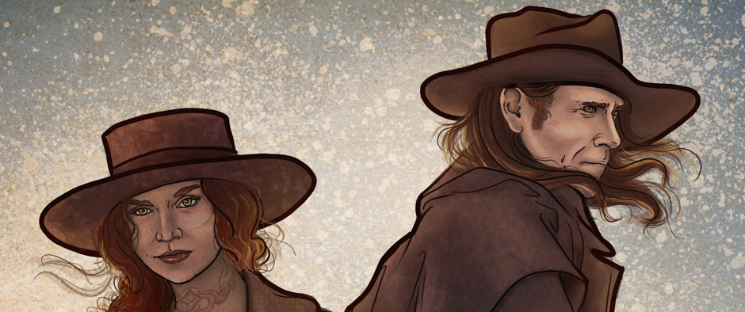

life is short, dream big

I am a full time designer, part-time writer, and occasional dreamer. With an interest in the fantastical, I am specializing now in creative based content such as blogging and novel writing
This is a personal web site for my writing and photography, each with its own creative outlet in the fantastical. Most of what I do springs from the imagination with more focus on creating a collaborative story telling adventure with readers who want to see how it will all come together.
Here you will find
Background
In addition to writing novels, I am starting to make my way through the trials and joys of photography. Please visit these portfolio pages to see more!